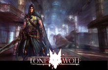

LoneWolf / kjAPI
In September 2008, I started working as an intern at Ksatria Gameworks for 6 months.
Ksatria is an independent game developer based in Singapore, employing a multi-cultural team coming from all around the world.
I joined the group of programmers, headed by co-founder Cedric Caillaud.
At the time being, I have been working on Ksatria’s current project LoneWolf and kjAPI, the engine it is based on.
LoneWolf - Flight from the Dark

LoneWolf - Flight from the Dark is based on the first volume of Joe Dever’s game book series LoneWolf.
It is about a warrior monk of the order of the Kai, who lives in the fantasy world of Magnamund.
As his monastery is destroyed by the Giaks, he - as the only survivor and last of the Kai - tries to
travel to the capital to warn the king.
A classical story about good versus evil.
kjAPI
Besides developing LoneWolf, kjAPI is considered as a product itself.
The engine was built in a very flexible way from the beginning to create a middleware product for game-developers - just like the Unreal or Id-Tech engines.
Tasks
This is an excerpt of what I have done at Ksatria:
- Refactoring, rewriting and documenting the GUI system to a large amount
- Extending the GUI tools, as well as enhancing their usability
- Creation of game GUI’s and scripts (menus, HUD, radial weapon chooser)
- Animation compression
- Gameplay programming
- The usual suspects: fixing bugs, crashes and memory leaks wherever they appear